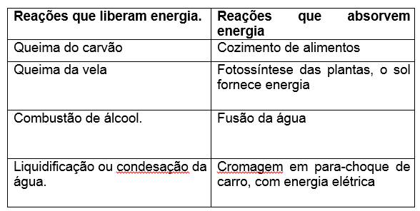
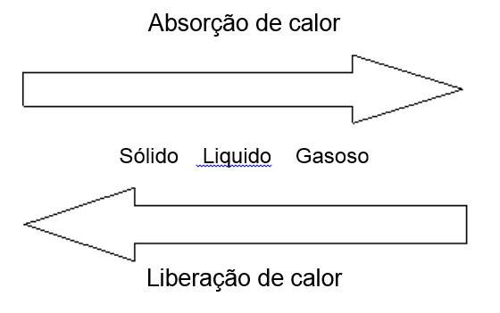

As transformações físicas e as reações químicas quase sempre estão envolvidas em perda ou ganho de calor. O calor é uma das formas de energia mais comum que se conhece. Termoquímica é a parte da química que vem para estudar as quantidades de calor liberados ou absorvidos, durante estas reações químicas.
Na tabela abaixo podemos observar algumas destas reações.

Tambem ocorrre liberação e absorção de calor durante as mudanças do estado fisico da materia (Solido, liquido, gasoso).

ENTALPIA – (H)
A energia armazenada nas substâncias reagentes (ΔR) ou produtos (ΔP), dá-se o nome de conteúdo de calor (Q) ou entalpia (ΔH). Se caso fossemos colocar isto em uma equação ficaria assim:
ΔH = ΔP – ΔR --> Q = - ΔH
Cada substância armazena um certo conteúdo de calor, que mudará quando a substância se transformar, que pode ser para, exotérmicas liberam calor(ΔP < ΔR) ou endotérmicas absorvem calor(ΔP > ΔR). Exemplos na tabela acima.